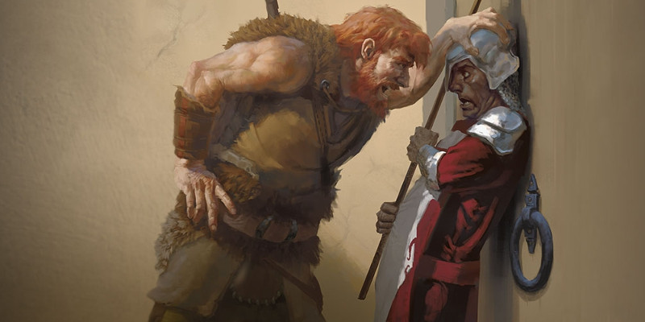

Voies primitives de barbare
Au niveau 3, un barbare gagne la capacité Voie primitive. Voici de nouvelles options de voies :
- Voie du gardien ancestral
- Voie du héraut des tempêtes
- Voie du zélote
- Voie de l'âme sauvage
- Voie de la bête
Voie du gardien ancestral (v2)
Certains barbares viennent de cultures qui vénèrent leurs ancêtres. Ces tribus enseignent que les guerriers du passé restent dans le monde sous la forme de puissants esprits qui peuvent guider et protéger les vivants. Lorsque les barbares qui suivent cette voie entrent en rage, ils traversent la barrière du monde des esprits et appellent des esprits gardiens à l'aide. Ces barbares qui tirent parti de leurs gardiens ancestraux combattent pour protéger leurs tribus et leurs alliés. Avec l'aide des esprits, ils peuvent entraver leurs ennemis avant de les asséner de coups. Afin de consolider les liens avec leurs gardiens ancestraux, les barbares qui suivent cette voie se couvrent le corps de tatouages élaborés qui célèbrent les actes de leurs ancêtres. Ces tatouages racontent des sagas épiques de victoires contre des monstres terribles et des ennemis redoutables.
Protecteurs ancestraux
À partir du niveau 3, des guerriers spectraux apparaissent lorsque vous entrez en rage. Ces guerriers distraient un ennemi que vous combattez et entravent ses tentatives de nuire à vos compagnons. Tant que vous êtes en rage, la première créature que vous touchez lors d'une attaque durant votre tour devient la cible des guerriers. Jusqu'au début de votre prochain tour, ou jusqu'à ce que votre rage s'arrête, la cible a un désavantage à tous ses jets d'attaque qui ne vous prennent pas pour cible et toute créature mis à part vous-même a une résistance aux dégâts contre les attaques de la cible.
Bouclier des esprits
À partir du niveau 6, les esprits gardiens qui vous aident peuvent assurer une protection surnaturelle à vos alliés. Si vous êtes en rage et qu'une créature que vous pouvez voir dans un rayon de 9 mètres reçoit des dégâts, vous pouvez utiliser votre réaction pour réduire ces dégâts de 2d8. Lorsque vous atteignez certains niveaux dans cette classe, vous pouvez réduire encore plus les dégâts : de 3d8 au niveau 10 et de 4d8 au niveau 14.
Consulter les esprits
Au niveau 10, vous obtenez la possibilité de consulter vos esprits ancestraux et de les utiliser pour explorer des zones lointaines. Dans ce cas, vous lancez le sort clairvoyance, sans avoir besoin d'emplacement de sort. Au lieu de créer un capteur sphérique, le sort invoque de manière invisible un de vos esprits ancestraux à l'endroit choisi. La Sagesse est votre caractéristique d'incantation pour ces sorts. Après avoir jeté le sort de cette façon, vous ne pouvez plus le faire jusqu'à ce que vous terminiez un repos court ou long.
Ancêtres vengeurs
Au niveau 14, vos esprits ancestraux deviennent assez puissants pour frapper les ennemis qui osent nuire à ceux que vous protégez. Lorsque vous utilisez votre Bouclier des esprits pour protéger une créature qui reçoit des dégâts lors d'une attaque, l'attaquant subit des dégâts égaux à la quantité de dégâts que le Bouclier des esprits a empêchés.
Voie du héraut des tempêtes
Version officielle du Xanathar's Guide to Everything de cette sous-classe publiée initialement dans la rubrique Unearthed Arcana.
Les barbares typiques ancrent leur fureur en leur for intérieur. La rage leur confère une force, une endurance et une vitesse supérieure. Les barbares qui suivent la voie du héraut des tempêtes apprennent à transformer leur rage en un manteau de magie primale qui tourbillonne autour d'eux. Lorsqu'ils sont en fureur, les barbares de cette voie puisent dans les forces de la nature pour créer de puissants effets magiques. Les hérauts des tempêtes sont des champions d'élite qui se rassemblent aux côtés des druides, des rôdeurs et de tous ceux qui se sont juré de protéger le royaume naturel. D'autres affûtent leur talent dans des régions dévastées par les tempêtes, dans les territoires gelés au bout du monde, ou au plus profond des déserts les plus chauds.
Aura de tempête
À partir du niveau 3, vous émanez une aura magique de tempête pendant que vous êtes en rage. L'aura s'étend de vous sur 3 mètres dans toutes les directions, mais est bloquée par un abri total. Votre aura possède un effet qui s'active lorsque vous entrez en rage, et vous pouvez réactiver l'effet à chacun de vos tours par une action bonus. Choisissez entre le désert, la mer et la toundra. L'effet de votre aura dépend de l'environnement choisi, comme détaillé ci-dessous. Vous pouvez changer votre choix d'environnement chaque fois que vous gagnez un niveau dans cette classe. Si les effets de votre aura nécessitent un jet de sauvegarde, le DD est égal à 8 + votre bonus de maîtrise + votre modificateur de Constitution.
Désert. Lorsque cet effet est activé, toutes les autres créatures dans votre aura subissent chacune 2 dégâts de feu. Les dégâts augmentent lorsque vous atteignez certains niveaux dans cette classe, passant à 3 au niveau 5, 4 au niveau 10, 5 au niveau 15 et 6 au niveau 20.
Mer. Lorsque cet effet est activé, vous pouvez choisir une créature à l'intérieur de votre aura, autre que vous-même. La cible doit faire un jet de sauvegarde de Dextérité et subit 1d6 dégâts de foudre en cas d'échec, ou seulement la moitié en cas de succès. Les dégâts augmentent lorsque vous atteignez certains niveaux dans cette classe, passant à 2d6 au niveau 10, 3d6 au niveau 15 et 4d6 au niveau 20.
Toundra. Lorsque cet effet est activé, toutes les créatures de votre choix dans votre aura gagnent 2 points de vie temporaires. Les points de vie temporaires augmentent lorsque vous atteignez certains niveaux dans cette classe, passant à 3 au niveau 5, 4 au niveau 10, 5 au niveau 15 et 6 au niveau 20.
Âme des tempêtes
Au niveau 6, la tempête vous confère des avantages même lorsque votre aura n'est pas active. Les avantages sont basés sur l'environnement que vous avez choisi pour votre Aura de tempête.
Désert. Vous gagnez la résistance aux dégâts de feu et ne souffrez plus d'effets dus à de très hautes températures. De plus, au prix d'une action, vous pouvez toucher un objet inflammable qui n'est pas porté ou transporté par quelqu'un d'autre et y mettre le feu.
Mer. Vous gagnez la résistance aux dégâts de foudre et vous pouvez respirer sous l'eau. Vous gagnez également une vitesse de nage de 9 mètres.
Toundra. Vous gagnez la résistance aux dégâts de froid et ne souffrez plus d'effets dus à de très basses températures. De plus, au prix d'une action, vous pouvez toucher de l'eau et transformer un cube de 1,50 mètre de côté en glace, qui fondra au bout d'une minute. L'action échoue si une créature se trouve dans le cube.
Tempête protectrice
Au niveau 10, vous apprenez à utiliser votre maîtrise de la tempête pour protéger vos alliés. Toutes les créatures de votre choix situées dans votre Aura de tempête obtiennent la résistance aux dégâts que vous avez acquis grâce à la capacité Âme des tempêtes.
Tempête déchaînée
Au niveau 14, la puissance de la tempête que vous canalisez devient plus puissante et s'en prend à vos ennemis. L'effet est basé sur l'environnement que vous avez choisi pour votre Aura de tempête.
Désert. Immédiatement après qu'une créature dans votre aura vous ait touché lors d'une attaque, vous pouvez utiliser votre réaction pour forcer cette créature à faire un jet de sauvetage de Dextérité. En cas d'échec, la créature subit des dégâts de feu équivalant à la moitié de votre niveau de barbarie.
Mer. Lorsque vous touchez une créature dans votre aura lors d'une attaque, vous pouvez utiliser votre réaction pour forcer cette créature à faire un jet de sauvegarde de Force. En cas d'échec, la créature tombe à terre, comme si elle avait été frappée par une vague.
Toundra. Chaque fois que l'effet de votre Aura de tempête est activé, vous pouvez choisir une créature que vous pouvez voir dans l'aura. Cette créature doit réussir un jet de sauvegarde de Force pour ne pas voir sa vitesse réduite à 0 jusqu'au début de votre prochain tour, suite à un givre magique qui la recouvre.
Voie du zélote
Version officielle du Xanathar's Guide to Everything de cette sous-classe publiée initialement dans la rubrique Unearthed Arcana.
Certaines divinités encouragent leurs fidèles à se lancer dans les batailles avec fureur. Ces barbares sont des zélotes, des guerriers qui canalisent leur rage dans des démonstrations impressionnantes de la puissance divine. Divers dieux à travers les mondes de D&D poussent leurs adeptes à embrasser cette voie. Tempus des Royaumes Oubliés, ou Hextor et Erythnul de Greyhawk, sont d'excellents exemples. En général, les dieux qui inspirent les zélotes sont des divinités du combat, de la destruction et de la violence. Tous ne sont pas mauvais, mais seuls quelques-uns sont bons.
Fureur divine
À partir du niveau 3, vous pouvez canaliser la fureur divine dans vos attaques avec une arme. Si vous êtes en rage, la première créature que vous touchez à chacun de vos tours lors d'une attaque avec une arme prend des dégâts supplémentaires égaux à 1d6 + la moitié de votre niveau barbare. Les dégâts supplémentaires sont nécrotiques ou radiants ; vous choisissez le type de dégâts lorsque vous gagnez cette capacité.
Guerrier des dieux
Au niveau 3, votre âme est destinée à des batailles sans fin. Si un sort, comme rappel à la vie, avait pour seul effet de vous ramener à la vie (mais pas comme mort-vivant), le lanceur de sort n'a pas besoin de posséder les composantes matérielles pour lancer le sort sur vous.
Obstination fanatique
À partir du niveau 6, la puissance divine qui alimente votre rage peut vous protéger. Si vous échouez à un jet de sauvegarde pendant votre rage, vous pouvez relancer le dé et devez alors utiliser le nouveau résultat. Vous pouvez utiliser cette capacité seulement une fois par rage.
Présence zélatrice
Au niveau 10, vous apprenez à canaliser la puissance divine pour inspirer le fanatisme chez les autres. Par une action bonus, vous exprimez votre fureur en libérant un cri de guerre imprégné d'énergie divine. Jusqu'à 10 autres créatures de votre choix dans un rayon de 18 mètres autour de vous et qui peuvent vous entendre gagnent un avantage aux jets d'attaque et de sauvegarde jusqu'au début de votre prochain tour. Vous devez terminer un repos long avant de pouvoir utiliser cette capacité à nouveau.
Enragé par-delà la mort
À partir du niveau 14, la puissance divine qui alimente votre rage vous permet d'asséner des coups mortels. Si vous êtes en rage, avoir 0 point de vie ne vous rend pas inconscient. Vous devez toujours faire les jets de sauvegarde contre la mort et si vous prenez des dégâts en étant à 0 point de vie, vous en subissez les effets normalement. Néanmoins, si vous deviez mourir pour avoir raté vos jets de sauvegarde contre la mort, vous ne mourrez qu'à la fin de votre rage et si vous êtes toujours à 0 point de vie.
Voie de l'âme sauvage
[ Cet archétype a ensuite été publié dans sa version finale dans le Tasha's Cauldron of Everything sous le nom de Voie de la magie sauvage]
Voie de la bête
Les barbares qui suivent la voie de la bête tirent leur rage d'une étincelle bestiale qui brûle dans leur âme. Cette bête hurle pour être libérée et jaillit dans les affres de leur rage. Ceux qui suivent cette voie pourraient être habités par un esprit primitif ou descendre de métamorphes. Vous pouvez choisir l'origine de votre puissance sauvage ou la déterminer au hasard en utilisant la table ci-dessous.
| 1d4 | Origine |
| 1 | L'un de vos parents est un lycanthrope. Vous avez hérité d'une part de la malédiction. |
| 2 | Vous descendez d'un druide légendaire, ce qui se manifeste par votre capacité à changer partiellement de forme. |
| 3 | Un esprit féerique vous a conféré le don d'adopter différents aspects de bêtes. |
| 4 | Un ancien esprit animal habite en vous, vous permettant de suivre cette voie. |
Forme de la bête
Capacité de la voie de la bête de niveau 3
Quand vous entrez dans votre rage, vous pouvez vous transformer, révélant le pouvoir bestial qui est en vous. Jusqu'à la fin de votre rage, vous gagnez une arme de corps à corps naturelle, à choisir parmi les options suivantes chaque fois vous entrez en rage :
Morsure. Votre bouche se transforme en un museau bestial ou en de grandes mandibules (selon votre choix). Votre morsure cause 1d8 dégâts perforants au toucher. Une fois par tour, si vous infligez des dégâts à une créature avec votre morsure, vous regagnez un nombre de points de vie égal à votre modificateur de Constitution (minimum 1 pv).
Griffes. Vos mains se transforment en pattes griffues qui infligent 1d6 dégâts tranchants au toucher. Quand vous utilisez l'action Attaquer à votre tour pour faire une attaque avec vos griffes, vous pouvez effectuer une attaque supplémentaire avec vos griffes dans la même action.
Queue. Vous avez désormais une queue épineuse, qui inflige 1d12 des dégâts perforant au toucher et à la propriété allonge.
Âme de la bête
Capacité de la voie de la bête de niveau 6
RAPPEL DES RÈGLES : SAUTER COÛTE DU MOUVEMENT
Lorsque vous sautez, chaque mètre sauté coûte un mètre de mouvement durant votre tour. Lorsqu'une capacité de classe, un sort ou un autre effet étend votre saut, les mètres supplémentaires coûtent également du mouvement.
L'esprit sauvage qui est en vous est devenu plus puissant, rendant magiques les armes naturelles de votre Forme de la bête vis-à-vis de la résistance et de l'immunité aux attaques et aux dégâts non magiques. Vous pouvez aussi faire appel à l'esprit sauvage pour vous aider à vous adapter à votre environnement. Lorsque vous terminez un repos court ou long, choisissez l'une des options suivantes. Chaque effet dure jusqu'à ce que vous finissiez un repos court ou long.
- Vous gagnez une vitesse de nage égale à votre vitesse de marche, et vous pouvez respirer sous l'eau.
- Vous gagnez une vitesse d’escalade égale à votre vitesse de marche, et vous pouvez escalader des surfaces difficiles et être au plafond la tête en bas sans avoir besoin de faire un jet de caractéristique.
- Quand vous sautez, vous pouvez faire un jet de Force (Athlétisme) et étendre votre saut d'un nombre de mètres égal au résultat du jet divisé par trois. Vous ne pouvez utiliser cette capacité qu’une fois par tour.
Furie contagieuse
Capacité de la voie de la bête de niveau 10
Quand vous touchez une créature avec vos armes naturelles alors que vous êtes en rage, l'esprit qui est en vous peut maudire votre cible avec une fureur fanatique. La cible doit réussir un jet de sauvegarde de Sagesse (DD égal à 8 + votre modificateur de Constitution + votre bonus de maîtrise) ou subir l'un des effets suivants (selon votre choix) :
- La cible doit utiliser sa réaction pour effectuer une attaque au corps à corps contre une autre créature de votre choix que vous pouvez voir.
- La cible subit 2d12 dégâts psychiques.
Vous pouvez utiliser cette capacité un nombre de fois égal à votre modificateur de Constitution (minimum 1 fois). Vous regagnez toutes les utilisations dépensées à la fin de chaque repos long.
Appel de la chasse
RAPPEL DES RÈGLES : LES POINTS DE VIE TEMPORAIRES NE SE CUMULENT PAS
Si vous avez des points de vie temporaires et en recevez d'autres, vous ne pouvez les ajouter aux premiers, à moins qu'une règle ne précise le contraire. Vous devez décider quels points de vie temporaires vous gardez. Pour plus d'informations sur les points de vie temporaires, consultez le chapitre 9 du Manuel des Joueurs.
Capacité de la voie de la bête de niveau 14
La bête en vous devient si puissante que vous pouvez transmettre sa férocité à vos alliés. Lorsque vous entrez en rage, vous pouvez choisir un nombre de créatures consentantes que vous pouvez voir dans un rayon de 9 mètres autour de vous égal à votre modificateur de Constitution (minimum une créature). Jusqu'à la fin de votre rage, les créatures choisies gagnent la capacité Attaque téméraire et vous avez un avantage à vos jets de sauvegarde pour ne pas être effrayé. Vous gagnez également 5 points de vie temporaires par créature qui accepte ce bénéfice.
Vous pouvez utiliser cette capacité un nombre de fois égal à votre modificateur de Constitution (minimum 1 fois). Vous regagnez toutes les utilisations dépensées à la fin de chaque repos long.

Traduit par kevetoile, Ewylana et blueace